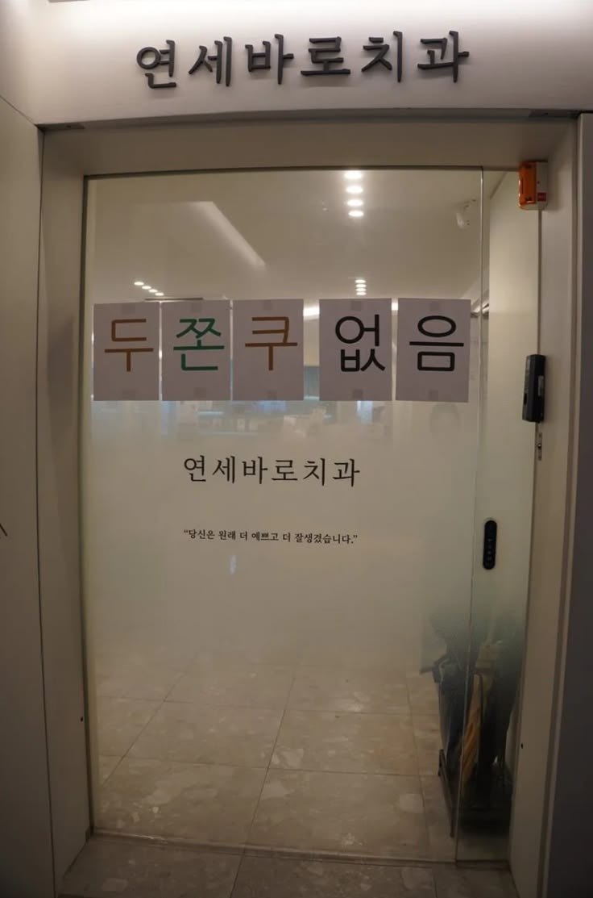
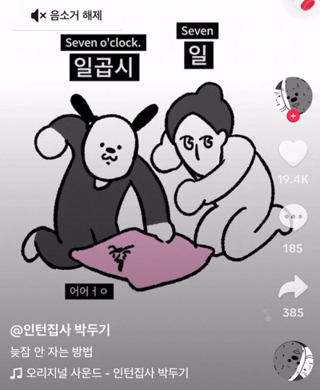

때는 두쫀쿠 붐이 일었던 2025년 12월.

인터넷을 켜도, 인스타를 넘겨도, 심지어 꿈속에서도 그 쫀득하고 두툼한 쿠키의 자태가 나를 괴롭혔다. 유행하는 건 꼭 내 눈으로 확인해야 직성이 풀리는 나였기에, 내 목표는 단 하나였다. '두쫀쿠 영접'.
하지만 그 길은 멀고도 험난했다. 오전 10시에 문을 여는 카페의 쿠키가 10시 반이면 흔적도 없이 사라진다는 소식은 나에게 사형 선고나 다름없었다. 방학을 맞이한 대학생에게 '오전 9시 기상'이란, 불가능에 가까운 미션이었기 때문이다. 평소의 나는 겨울잠에 든 곰처럼 한 번 잠들면 침대와 물아일체가 되곤 했다.

그럼에도 나는 포기할 수 없었다.
어느 날 밤,
SNS에서 '자기 전 베개를 세 번 치며 기상 시간을 외치면 뇌가 반응한다'는 신비로운 릴스를 발견했다.
나는 그날부터 매일 밤 경건한 마음으로 침대 앞에 무릎을 꿇었다.
"9시, 9시, 9시!" 손바닥이 얼얼해질 정도로 베개를 내리치며 간절히 기도했다.
이것은 기상을 위한 노력을 넘어, 두쫀쿠라는 성배를 얻기 위한 일종의 성스러운 의식이었다.

하지만 현실은 잔혹한 법.
알람은 매일 아침 나를 열심히 깨워댔지만, 내 뇌는 그 소리를 자장가 삼아 더 깊은 잠에 빠졌다. 간신히 눈을 뜨면 언제나 창밖은 이미 해가 중천을 넘어 내리쬐고 있었다.
10시 31분,
인스타 스토리에 올라오는 'Today Sold Out' 공지를 확인할 때마다 가슴이 찢어지는 것 같았다.

이것은 단순한 게으름의 문제가 아니었다.
세상이 나를 거부하고, 운명이 나를 시험하며, 우주의 기운이 나의 두쫀쿠 득템을 방해하는 것만 같았다.
'나는 평생 저 전설의 맛을 보지 못한 채 늙어 죽을 것인가?' 하는 공포마저 밀려왔다. 친구들이 올리는 인증샷을 보며 나는 편의점의 퍽퍽한 양산형 쿠키로 연명해야만 했다.